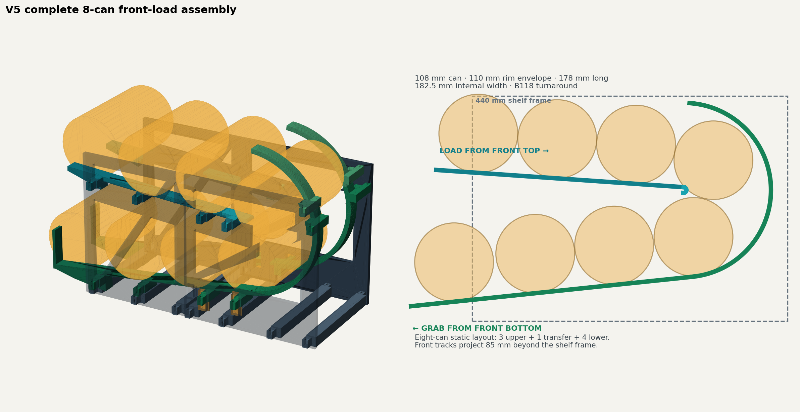
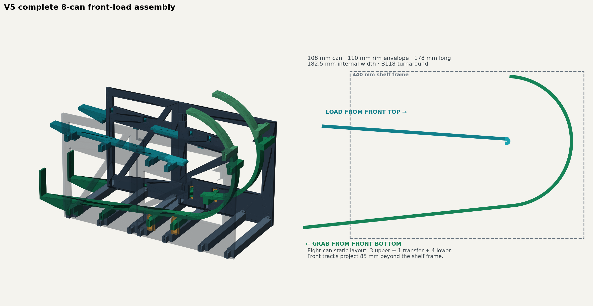

Load
Add a can through the front upper mouth of the dispenser.
What if a restaurant shelf could do a little inventory management on its own? A front-loaded, gravity-fed rack designed to bring the next can right back to the front.


The project began as a practical kitchen problem: fit large cans into a shallow shelf, load from the front, and retrieve the oldest available can from the front bottom. The challenge wasn't storing them. It was guiding one can around the rear curve without jamming.
Add a can through the front upper mouth of the dispenser.
The upper tracks slope approximately 4° toward the rear.
A B118 continuous-support turnaround guides the can toward the lower lane.
The lower track slopes roughly 6° toward the front stop and pickup cradle.
The V4 transfer had a hook and blunt transition that risked catching cans, especially when the lower lane was empty. V5 replaced the transition with a rounded nose, a continuous curved guide, and overlapping seams.
A transfer path that needs another can beneath it can leave the first can hanging. The goal became a one-can, empty-lane turnaround — a testable requirement rather than an assumption.
Rounded upper nose, B118 rear bowl, and a smooth lower exit. A separate small turnaround cassette is included in the full design archive so this geometry can be tested before printing the whole rack.
Its geometry is constrained by the available kitchen shelf space and by a home printer's build plate. The front projections are intentional and must be checked against the actual installation.
This is an engineering artifact, not a product announcement. Credibility means making the boundary between a modeled solution and a physical working machine visible.
Prototype status as documented November 3, 2026. Physical test results have not been supplied. Not represented as a certified commercial dispenser.
A new print, a jam, a measurement, or a redesigned seam can become the next version of this record. The object matters; so does the reasoning that gets it working.
Project: Heavy-Duty Gravy Can Dispenser, Version 5
Concept, measurements & design direction: Brad DeVowe
CAD development & design assistance: Lincoln (ChatGPT / OpenAI)
Curatorial setting: Simple Minds Studios · proposed artifact
Evidence: V5 source archive, assembly and print guide, CAD previews, validation record
Release: Exhibit-only; print sources intentionally excluded from public web folder until approved for release
The build files are preserved separately by the project owner. View this as a transparent design case study, not permission to manufacture or claim physical validation.